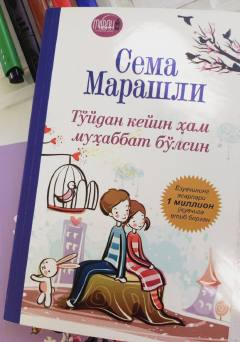

TKTo'ydan keyin ham muhabbatni asrash sirlari haqida amaliy qo'llanma.
Kitob Farhod va Shirin ismli er-xotin juftligining oilaviy muammolarini hal qilish uchun maslahatchi yordamiga murojaat qilishi haqida hikoya qiladi. Maslahatchi ularga qirq kun davomida qirq qadam tashlash orqali munosabatlarini tiklashni taklif etadi. Asar to'ydan keyin ham muhabbatni saqlab qolish sirlari va oilaviy baxt yo'llarini o'rgatadi.